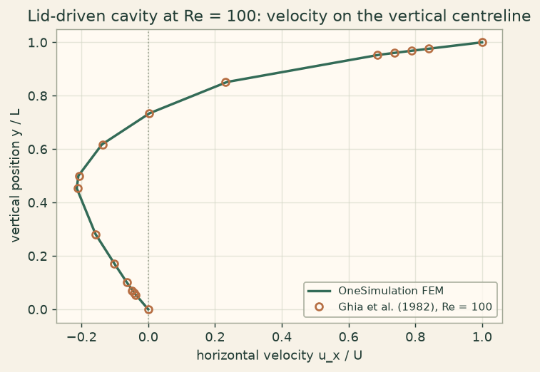
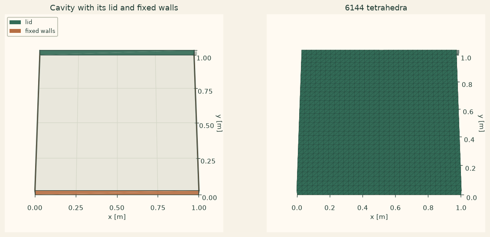

Docs › Examples › Lid-driven cavity at Re = 100
Fluid flow · 2D
Lid-driven cavity at Re = 100
The classic driven-cavity flow at Re = 100: a moving lid drives a primary vortex in a square cavity.
Run locally with OneSimulation. The example downloads are free. Running them requires an activated runtime. Runtime Alpha 0.2.1a7 · CPython 3.13 on macOS (Apple Silicon), Ubuntu 22.04 (x86-64), and Windows x64. Installation and activation · View pilot plans. Scope of the reference checks.

What it computes
OneSimulation cuts the cavity from a STEP part, meshes the square cross-section with triangles graded towards the lid and solves the steady two-dimensional incompressible Navier-Stokes equations with Taylor-Hood elements and Newton iteration; the pressure level is fixed by a mean-value constraint. The script that builds the STEP file comes with the notebook.
What it checks
The horizontal velocity on the vertical centre line matches the tabulated benchmark of Ghia, Ghia and Shin (1982) at all 17 points within 0.0050 of the lid speed.
Geometry
The notebook starts at the import of the CAD file lid_driven_cavity.step: STEP (AP242), readable by any CAD program, with the names of the faces that the boundary conditions use. Put it next to the notebook.

The geometry script
The script lid_driven_cavity_geometry.py builds the geometry with the CAD objects of OneSimulation and writes the file. Change a dimension there, run it, and run the notebook again.
"""Geometry of the OneSimulation example "Lid-driven cavity at Re = 100".
Builds the cavity, a square of side 1 m as a slab 62.5 mm thick, with the CAD objects of
OneSimulation and writes lid_driven_cavity.step. The lid is the face y_max; the faces keep their
names x_min, x_max, y_min, y_max, z_min and z_max in the file. The example computes on the
cross-section z = 31.25 mm.
"""
from onesim.cad.d3 import Box
cavity = Box(length=1.0, width=1.0, height=0.0625)
cavity.save("lid_driven_cavity.step")The notebook
The complete notebook, cell by cell. Run it to produce the figures and the comparison printout.
An incompressible Newtonian fluid fills a square cavity of side \(L\). The top lid slides in its own plane at constant speed \(U\) while the three remaining walls are fixed (no-slip). The Reynolds number is \(Re=\rho U L/\mu = 100\). This recirculating flow has no closed-form solution and is a classic verification case for incompressible Navier-Stokes solvers.
The cavity comes from the CAD file lid_driven_cavity.step, a thin slab whose face y_max is the lid. The script lid_driven_cavity_geometry.py builds it with the CAD objects of OneSimulation. The model is its cross-section: OneSimulation solves the two-dimensional stationary Navier-Stokes system \(\rho(u\cdot\nabla)u=-\nabla p+\mu\nabla^2 u\), \(\nabla\cdot u=0\) with Taylor-Hood finite elements (quadratic velocity, linear pressure) on triangles and a Newton solver.
| side | condition |
|---|---|
y_max (lid) | \(u=(U,0)\) |
x_min, x_max, y_min | no slip |
| pressure level | mean pressure zero |
Reference. The horizontal velocity \(u_x\) along the vertical centre line \(x=L/2\) in the benchmark of Ghia, Ghia & Shin (1982), "High-Re solutions for incompressible flow using the Navier-Stokes equations and a multigrid method", J. Comput. Phys. 48, 387-411, Table I, Re = 100.
import numpy as np
from onesim.cad.exchange import load
from onesim.materials import NewtonianFluid
from onesim.meshing import TriangularMesher
from onesim.numerics import Numerics
from onesim.numerics.fem import FiniteElement, TaylorHood
from onesim.numerics.linear import SparseDirect
from onesim.numerics.nonlinear import Newton
from onesim.physics.hydrodynamics import (
FixedVelocity,
NoSlipWall,
PlanarIncompressibleNavierStokes,
)
from onesim.simulation import Problem, Simulation
from onesim.simulation.field_constraints import MeanValue
from onesim.visualization import plots, theme
theme.set()Geometry and mesh
section cuts the slab at half thickness; the cross-section keeps the names of the faces it was cut from. The triangles are 1/32 of the side wide and half as wide along the lid, where the velocity changes fastest.
part = load("lid_driven_cavity.step")
cavity = part.section((0, 0, 1), origin=(0, 0, part.size[2] / 2))
faces = cavity.boundaries
side = cavity.size[0]
cells = 32
mesh = TriangularMesher(
target_size=side / cells,
size_field=lambda p: side
/ cells
* (0.5 + 0.5 * np.minimum(1.0, 4 * (side - p[:, 1]) / side)),
).generate(cavity)
fig = plots.figure(1, 2, size=(13, 6.5))
plots.geometry(
part,
selection={
"lid": part.boundaries.y_max,
"fixed walls": part.boundaries.x_min
| part.boundaries.x_max
| part.boundaries.y_min,
},
labels=False,
camera=plots.Camera(elevation=62, azimuth=-90),
title="Cavity with its lid and fixed walls",
ax=fig[0],
)
plots.mesh(
mesh,
groups=("all",),
legend=False,
title=f"Cross-section: {mesh.cell_count} triangles",
ax=fig[1],
)
plots.show()Model
Density and viscosity give \(Re=100\). The lid speed is uniform except for a linear ramp to zero over the last 1/32 of the side at each end, so the velocity is single-valued where the lid meets the fixed walls.
lid_speed = 1.0
fluid = NewtonianFluid(density=1.0, dynamic_viscosity=0.01)
model = PlanarIncompressibleNavierStokes(domain=cavity.domain(), material=fluid)
problem = Problem(
name="Lid-driven cavity",
geometry=cavity,
physics=(model,),
boundary_conditions=(
NoSlipWall(boundary=faces.x_min | faces.x_max | faces.y_min, physics=model),
FixedVelocity(
boundary=faces.y_max,
physics=model,
value=lambda x: np.column_stack(
(
lid_speed
* np.clip(np.minimum(x, side - x) * cells / side, 0.0, 1.0),
0 * x,
)
),
),
),
constraints=(MeanValue(model.pressure, 0.0),),
)
numerics = Numerics(
spatial=FiniteElement(element=TaylorHood()),
initial_guess={model.velocity: (0.0, 0.0)},
nonlinear_solver=Newton(
linear_solver=SparseDirect(),
absolute_tolerance=1e-9,
relative_tolerance=1e-10,
maximum_iterations=40,
),
)
velocity = (
Simulation(problem=problem, mesh=mesh, numerics=numerics)
.solve_stationary()
.field(model.velocity)
)Comparison with the Ghia-Ghia-Shin benchmark
The horizontal velocity on the vertical centre line at the heights of the benchmark table.
benchmark_y = np.array(
[
0.0000,
0.0547,
0.0625,
0.0703,
0.1016,
0.1719,
0.2813,
0.4531,
0.5000,
0.6172,
0.7344,
0.8516,
0.9531,
0.9609,
0.9688,
0.9766,
1.0000,
]
)
benchmark_u = np.array(
[
0.00000,
-0.03717,
-0.04192,
-0.04775,
-0.06434,
-0.10150,
-0.15662,
-0.21090,
-0.20581,
-0.13641,
0.00332,
0.23151,
0.68717,
0.73722,
0.78871,
0.84123,
1.00000,
]
)
u = (
velocity.evaluate(
np.column_stack((np.full_like(benchmark_y, side / 2), benchmark_y * side))
)[:, 0]
/ lid_speed
)
print(
f"Reynolds number: {fluid.density * lid_speed * side / fluid.dynamic_viscosity:.0f}"
)
print(" y / L benchmark simulation")
for height, reference, value in zip(benchmark_y, benchmark_u, u):
print(f"{height:8.4f} {reference:+12.5f} {value:+12.5f}")
print(
f"largest deviation from the benchmark: {np.abs(u - benchmark_u).max():.4f} of the lid speed"
)Figure
The speed in the cavity with the streamlines of the primary vortex, and the horizontal velocity on the vertical centre line against the benchmark.
height = np.linspace(0.0, 1.0, 201)
profile = (
velocity.evaluate(np.column_stack((np.full_like(height, side / 2), height * side)))[
:, 0
]
/ lid_speed
)
grid = np.linspace(0.0, side, 81)
samples = velocity.evaluate(np.array([[a, b] for a in grid for b in grid])).reshape(
len(grid), len(grid), 2
)
fig = plots.figure(1, 2, size=(14, 6.2))
plots.streamlines(
grid,
grid,
samples[..., 0],
samples[..., 1],
density=1.6,
label="speed [m/s]",
title="Streamlines of the primary vortex, Re = 100",
ax=fig[0],
)
plots.line(
y={"simulation": (profile, height)},
points={"Ghia et al. (1982), Re = 100": (benchmark_u, benchmark_y)},
vlines=0.0,
xlabel="horizontal velocity u_x / U",
ylabel="vertical position y / L",
title="Velocity on the vertical centre line",
legend="lower right",
ax=fig[1],
)
plots.show()Going further
Raise the Reynolds number toward 400 or 1000 and refine the mesh; the primary vortex strengthens, its centre drifts, and secondary corner vortices grow, all of which the same benchmark tables document. The cubic cavity in three dimensions is the example lid_driven_cube_3d.